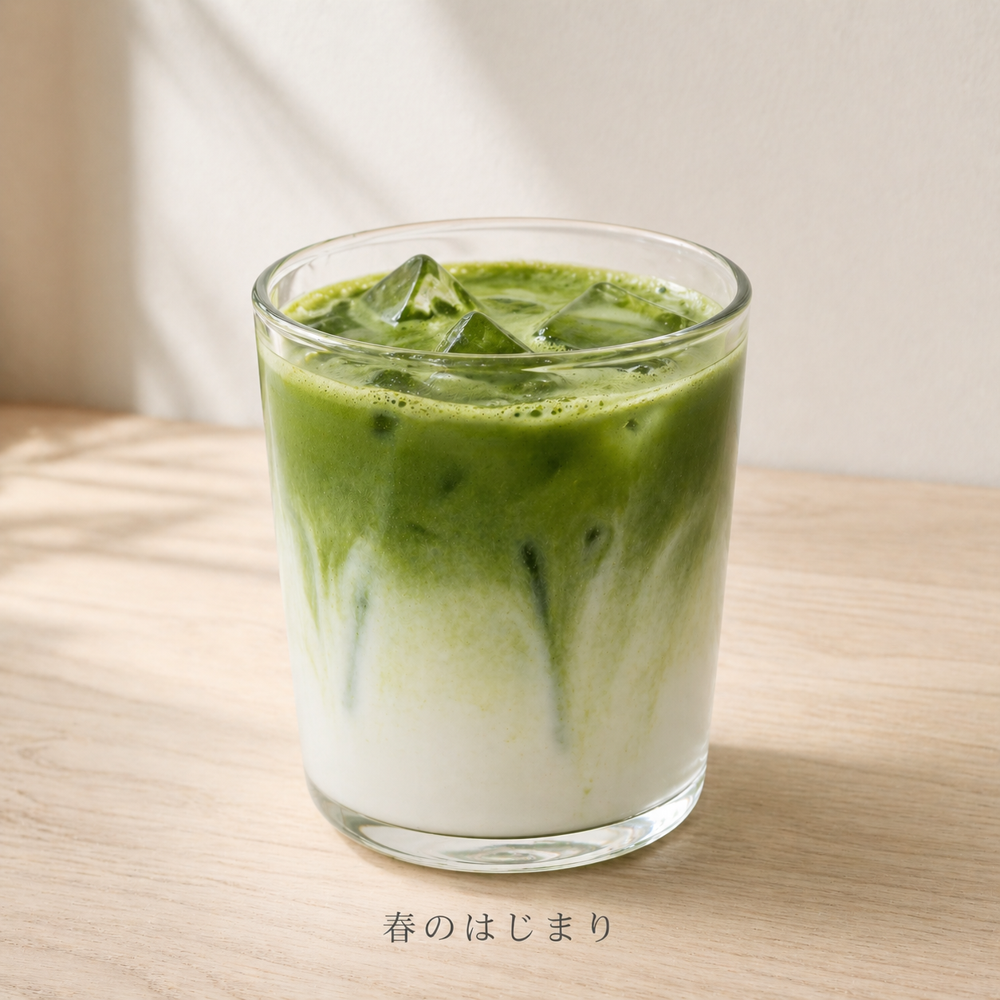
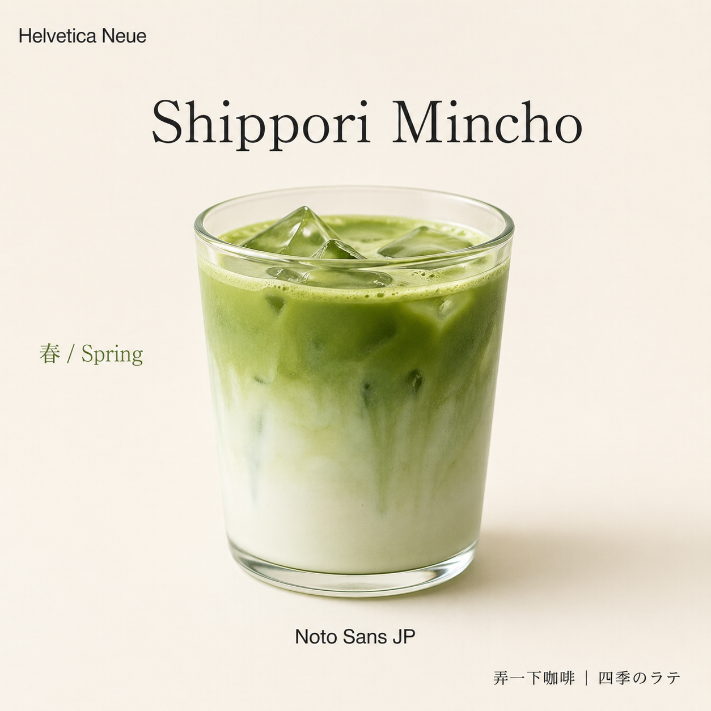
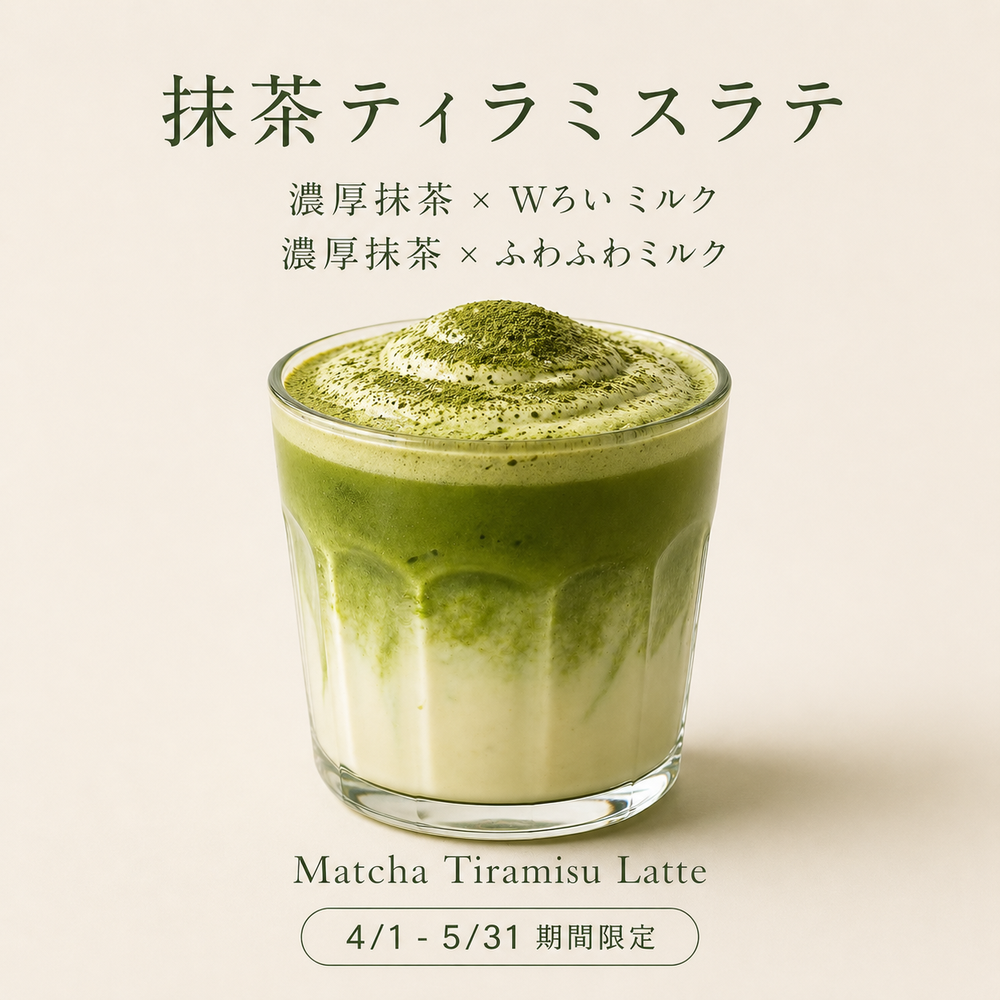
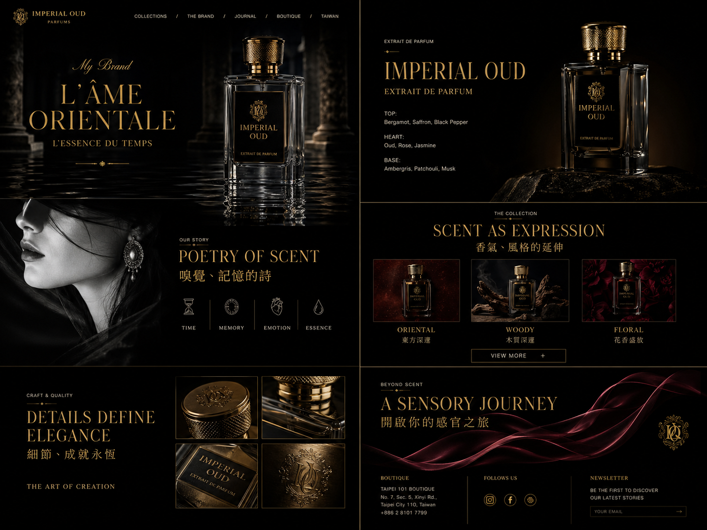

從 brief 到品牌系列整合實戰
最後一堂，把整套課程串起來看一遍。
整合工作流總圖 + 5 個現成演練案例，挑 1 個跑跑看就行。
需求 / Need — 把整套課程串起來看一遍
恭喜你撐到最後一堂。
前面幾堂你學了一堆東西——PM 三位一體、5 骨架、brief 六件套、L2 反推、跨產業套用、多變體、品牌 DNA、4 種驗收提問⋯⋯。
聽起來很多、其實只是一個工作流的不同段：
每次做新廣告，就是這 4 步，循環一輪。
下面這張整合工作流總圖，讓你一次看清楚 M2–M4 學的東西怎麼組在一起：
┌─────────────────────────────────────────────────────────────────┐ │ │ │ 需求 執行 驗收 迭代│ │ (PM 你) (AI 它) (PM 你) (PM 你)│ │ │ │ brief 六件套 ──→ L4 完稿 A ──→ 驗收 A 8 項清單 ──→ 保留X+修Y│ │ ↓ │ │ 同 brief ──→ L2 線稿 ──→ 驗收 B 6 項清單 ──→ 迭代或重跑│ │ ↓ │ │ L2 + 新主題 ──→ 新 L4 B / C ──→ 驗收 A ──→ 迭代│ │ ↓ │ │ L2 + 全套DNA ──→ 3 張系列 ──→ 驗收 C 5 項清單 ──→ 迭代│ │ │ │ 你的角色 AI 的工作 你的判斷 │ │ ───────── ───────── ───────── │ │ 需求判定者 執行設計師 骨架驗收者 │ │ 系列把關者 系列把關者 │ │ │ └─────────────────────────────────────────────────────────────────┘ M2 起｜生圖 → M3 承｜轉線稿 → M4 轉/合｜反控 CH2-1/2/PRAC2 CH3-1/2/PRAC3 CH4-1/2/3/PRAC4
4 步中只有「執行」是 AI 主導，其他 3 步都是你——這就是 PM 的工作占比。
一個提醒：今天不做新東西——這 30 分鐘是整理 + 跑一次。
跑得卡也沒關係——卡住就放下、看下個案例的 prompt。本單元的目標是「整合工作流的手感」，不是「完美交付物」。
設計 / Design — 5 個整合演練案例庫
brand: 弄一下咖啡工作室 風格 preset: 日系職人 色票: - primary: 鼠尾草綠 #5a7a5a - accent: 奶茶棕 #8a6a4a - bg: 奶油白 #f5efe3 禁用色: 純黑、漸層、霓虹色 字族: - headline: Shippori Mincho 700 - body: Noto Sans JP 400 語氣: 手作、職人、季節感、療癒 禁用語氣: 促銷轟炸、網路梗、CP 值口號 禁用視覺: 寫實人像、玻璃態、Comic Sans 主力骨架: 骨架 4 商品中心 × 道具環繞
- 商品（中央偏右、玻璃杯狀）
- 主標 2 行（左上）+ accent 手寫字
- 道具（左下原料盤 / 底部湯匙 / 右上葉片）
- 價格（左下）+ CTA（左下膠囊）
- 徽章（右下圓形）
| 主題 | 商品 | 季節徽章 | 道具暗示 |
|---|---|---|---|
| 春 | 抹茶提拉米蘇拿鐵 ¥680 | 春季限定 | 抹茶粉盤 + 木匙 + 綠葉 |
| 夏 | 柚子氣泡美式 ¥580 | 夏季限定 6/1–7/31 | 柚子切片 + 冰塊 + 薄荷葉 |
| 秋 | 焙茶拿鐵 ¥620 | 秋季限定 | 乾茶葉 + 木匙 + 楓葉 |
吃下以下品牌 DNA：
[貼上述 brand-dna 全部]
結構沿用：骨架 4 商品中心 × 道具環繞
本次主題：
- 商品：{春 抹茶提拉米蘇拿鐵 / 夏 柚子氣泡美式 / 秋 焙茶拿鐵}
- 季節徽章：{對應季節}
- 價格：{對應價格}
- 道具：{對應道具描述}
- 主標：{季節 + 商品名}
請產出 1:1 L4 完稿。
產完自檢：配色 / 字族 / 禁用清單是否全遵守？
brand: 安活診所 風格 preset: 日系保健（清新醫療） 色票: - primary: 薄荷綠 #a8d0c0 - accent: 深綠 #4a7a5a - bg: 米白 #faf7f2 禁用色: 純黑、霓虹、高飽和紅 字族: - headline: Shippori Mincho 700 - body: Noto Sans JP 400 語氣: 清新、可信、專業不冰冷、溫和 禁用語氣: 醫療廣告誇大語、療效保證 禁用視覺: 真實人像、漸層、注射器類圖示 主力骨架: 骨架 1 商品左 × 文字右
- 商品（左 40%、白色塑膠罐 / 玻璃瓶）
- 商品右上圓徽章「医師監修」
- 主標（右上 2 行）+ 副標
- 商品名 + 容量規格
- 3 特徵條列（每項配 icon）
- CTA 膠囊按鈕（右下）
| 主題 | 商品 | 主訴求 | 特徵 |
|---|---|---|---|
| A | 乳酸菌 30 日份 | 腸道健康 | 100 億活菌 / 醫師監修 / 敏感腸友善 |
| B | 葉黃素軟膠囊 | 眼睛保健 | 高純度 / 美國原料 / 無人工色素 |
| C | 鈣鎂錠 | 骨骼支援 | 高鈣低糖 / 含 D3 / 素食可 |
吃下以下品牌 DNA：
[貼上述 brand-dna 全部]
結構沿用：骨架 1 商品左 × 文字右
本次主題：
- 商品：{乳酸菌 30 日份 / 葉黃素軟膠囊 / 鈣鎂錠}
- 主訴求：{對應主訴求}
- 3 特徵：{對應特徵 3 條}
- 徽章：医師監修
- CTA 文字：立即了解
請產出 1:1 L4 完稿。
產完自檢：配色 / 字族 / 禁用清單是否全遵守？
brand: 弄一下工作室 風格 preset: 瑞士排版（極簡幾何） 色票: - primary: 深灰 #3a3a3a - accent: 奶茶棕 #8a6a4a - bg: 米白 #f8f5ef 禁用色: 漸層、多色組合、霓虹 字族: - headline: Helvetica / Noto Sans 800（粗黑） - body: Noto Sans 400 語氣: 紀律、清楚、沒廢話、誠懇 禁用語氣: 行銷話術、誇張形容詞、「神級」「終極」 禁用視覺: 裝飾插圖、寫實照片、大量 emoji 主力骨架: 骨架 5 大字堆疊 × 小圖輔助
- 日期 tag（左上、線條 highlight）
- 主標 3 行堆疊（大字、左對齊）
- 副標（主標下方 1 行）
- 日時 / 場所 / 講師（底部 meta info 橫排）
- CTA 寬膠囊（底部）
- 小裝飾插圖（右下 20%）
| 主題 | 標題 | 日期 | meta |
|---|---|---|---|
| A | AI 設計流水線（本課！） | 2026.06.15 | Zoom / 線上 / 弄一下工作室 |
| B | n8n 自動化進階 | 2026.07.20 | 實體 / 6h / 林老師 |
| C | NotebookLM 知識庫實戰 | 2026.08.10 | Zoom / 4h / 王老師 |
吃下以下品牌 DNA：
[貼上述 brand-dna 全部]
結構沿用：骨架 5 大字堆疊 × 小圖輔助
本次主題：
- 課程標題：{AI 設計流水線 / n8n 自動化進階 / NotebookLM 知識庫實戰}
- 日期 tag：{對應日期}
- meta 資訊：{對應 Zoom / 實體 / 講師}
- CTA 文字：立即報名
請產出 1:1 L4 完稿。
產完自檢：配色 / 字族 / 禁用清單是否全遵守？
brand: 瀨戶內慢旅 風格 preset: 歐陸度假（明亮陽光） 色票: - primary: 海藍 #4a8aaa - accent: 珊瑚粉 #e8a8a0 - bg: 米白 #f5f1e8 禁用色: 純黑、深灰、漸層、霓虹 字族: - headline: Shippori Mincho 700 - body: Noto Sans 400 語氣: 放鬆、悠閒、嚮往、療癒 禁用語氣: 急促行銷、催購、「最後機會」 禁用視覺: 商業感過重、玻璃態 主力骨架: 骨架 3 風景底 × 資訊下
- 風景照（上 60%、海景 / 山景 / 民宿）
- 疊字主標（風景中段、2 行）
- 圓徽章（風景右側、期間 + 折扣）
- 3 特徵欄（底部 grid、icon + 說明）
- 寬 CTA（底部）
| 主題 | 路線 | 期間徽章 | 特徵 |
|---|---|---|---|
| A | 瀨戶內 2 天 1 夜 | 6/1–7/31 限定 | 直行渡輪 / 絕景 / 在地美食 |
| B | 阿里山溫泉小旅 | 9/1–10/31 限定 | 高山日出 / 溫泉 / 茶園採摘 |
| C | 蘭嶼自由行 4 天 3 夜 | 春季限定 | 浮潛 / 觀星 / 在地民宿 |
吃下以下品牌 DNA：
[貼上述 brand-dna 全部]
結構沿用：骨架 3 風景底 × 資訊下
本次主題：
- 路線名稱：{瀨戶內 2 天 1 夜 / 阿里山溫泉小旅 / 蘭嶼自由行 4 天 3 夜}
- 期間徽章：{對應期間}
- 風景主體：{海景 / 山景日出 / 島嶼海岸}
- 3 特徵：{對應特徵 3 條}
- CTA 文字：探索行程
請產出 1:1 L4 完稿。
產完自檢：配色 / 字族 / 禁用清單是否全遵守？
brand: notero ノテロ 風格 preset: 矽谷科技（極簡未來） 色票: - primary: 深藍 #1a4d7a - accent: 天藍 #5a9ad0 - bg: 白 #ffffff 禁用色: 暖色（橘黃紅）、漸層、紋理 字族: - headline: Inter / SF Pro 700 - body: Inter / SF Pro 400 語氣: 現代、極簡、效率、信賴 禁用語氣: 文藝風、復古、感性煽情 禁用視覺: 手寫字、寫實照片、復古元素 主力骨架: 骨架 2 mockup 右 × 文字左
- iPhone mockup（右 45%、含 App 介面）
- 品牌訊息（左上小字）
- 主標 2 行（左上大字）
- 強調副標
- App icon + App 名 + 副名
- 本文（左中）
- 3 特徵膠囊標籤（左下）
- 主 CTA 膠囊（左下）
| 主題 | 階段 | 主訴求 | mockup 畫面 |
|---|---|---|---|
| A | 新品上市 | 思考整理工具 | 任務清單頁 |
| B | 週年慶 30% OFF | 限時升級 Pro | 訂閱方案頁 |
| C | 會員推薦活動 | 邀請朋友拿月免費 | 推薦頁 |
吃下以下品牌 DNA：
[貼上述 brand-dna 全部]
結構沿用：骨架 2 mockup 右 × 文字左
本次主題：
- 行銷階段：{新品上市 / 週年慶 30% OFF / 會員推薦活動}
- 主訴求：{對應主訴求}
- mockup 畫面：{任務清單頁 / 訂閱方案頁 / 推薦頁}
- 3 特徵標籤：{依階段填入}
- CTA 文字：{免費下載 / 立即升級 / 邀請朋友}
請產出 1:1 L4 完稿。
產完自檢：配色 / 字族 / 禁用清單是否全遵守？
5 案例對照速查表——挑 1 個跟你業務最相關、或你最有感的進實作段：
| 案例 | 業種 | 骨架 | 風格 preset | 適合誰 |
|---|---|---|---|---|
| A | 餐飲 | 4 商品中心 | 日系職人 | 餐飲 / 手作店 / 季節商品 |
| B | 保健 | 1 商品左 | 日系保健 | 美妝 / 保健 / 居家產品 |
| C | 教育 | 5 大字堆疊 | 瑞士排版 | 課程 / 講座 / 招生 |
| D | 旅遊 | 3 風景底 | 歐陸度假 | 旅遊 / 民宿 / 地方創生 |
| E | App | 2 mockup 右 | 矽谷科技 | SaaS / 數位產品 / 工具 |
實作 / Implementation — 跑 1–3 張系列
請對剛才的 L4 對照 8 項結構清單自檢： 1. 商品位置 2. 主標位置 3. 徽章位置 4. CTA 位置 5. 配色（DNA 3 色） 6. 字族 7. 視覺動線 8. 多餘元素 通過 __/8 項。
如果你 PRAC4 已經跑出 brand-dna + 3 張系列，本實作段可以直接拿那組來再跑 1 張新主題——相當於把 PRAC4 的工作延伸 1 張，不用重做。
卡住怎麼辦
試跑包需求清單
1. 需求段｜整合工作流總圖
| 內容 | 用途 |
|---|---|
| 4 步閉環 ASCII 流程圖（需求 → 執行 → 驗收 → 迭代） | 視覺化整合工作流 |
| 三段工作流對應（M2 起 / M3 承 / M4 轉合） | 串起前面所有單元 |
| 「需求我寫、執行 AI、驗收我看、迭代我下」口訣 | 給學員記 |
2. 設計段｜5 個整合案例庫（核心資產）
| 案例 | brand-dna | L2 骨架 | 3 主題表 | prompt 模板 |
|---|---|---|---|---|
| A 餐飲 / 骨架 4 / 日系職人 | 已備 | 已備 | 春/夏/秋 | 已備 |
| B 保健 / 骨架 1 / 日系保健 | 已備 | 已備 | 乳酸菌/葉黃素/鈣鎂錠 | 已備 |
| C 教育 / 骨架 5 / 瑞士排版 | 已備 | 已備 | 3 場不同講座 | 已備 |
| D 旅遊 / 骨架 3 / 歐陸度假 | 已備 | 已備 | 瀨戶內/阿里山/蘭嶼 | 已備 |
| E App / 骨架 2 / 矽谷科技 | 已備 | 已備 | 上市/週年/推薦 | 已備 |
3. 實作段｜6 Step 流程 + 卡點處理表
| 內容 | 用途 |
|---|---|
| 6 Step 單張流程（複製 DNA / 複製 prompt / 跑 AI / 驗收 A / 換主題 / 跨張 C） | 實作引導 |
| 卡住處理表（4 種症狀 × 處理方式） | 不卡關 |
| 「用自家素材替代」說明 | 給已做 PRAC4 的學員 |
4. 驗證段｜資產樹 + 課後一週計畫
| 內容 | 用途 |
|---|---|
| 個人品牌資產庫結構樹（ASCII） | 視覺化帶走清單 |
| 課後一週計畫表（今天 / 明天 / 週末 3 行） | 落地具體行動 |
| 結尾引言 + PM 工作語言對比 | 收束情緒 |
明確不準備的東西
動手練習題
基本流程（5 步）：
- 複製 brand-dna（30 秒）：從案例段複製、貼進 AI
- 複製品牌繼承 prompt + 換 1 個主題（1 分鐘）：3 主題挑 1 個（例：案例 A 春季抹茶拿鐵）
- 跑 AI（1–2 分鐘）：等 L4 產出
- 貼驗收 A 自檢（1 分鐘）：對照 8 項清單
- 看結果就好——跑得通就成功，不通就翻另一個案例
選用：跑 2–3 張系列
若 10 分鐘內第 1 張跑得順，可以換另一個主題（春 → 夏 / A → B）再跑，體驗「同 DNA 跨主題」的系列感。
完成標準（self-check，輕鬆版）：
- 挑了 1 個案例（或用自家素材）
- 至少跑出 1 張 L4
- 跑過驗收 A（看到 AI 自檢結果）
- 寫下今天 / 明天 / 這週末各 1 件「真的會做」的小事
預期差異提醒：
- 你選的案例、主題、跑出的圖跟同學都不同——這是設計，不是缺陷
- 沒跑通也別自責——AI 生圖本身就有不穩定性，案例庫 prompt 已優化但仍可能跑偏
- 重點是整合工作流的手感，不是完美交付物
常見疑惑
疑惑 1｜「我課後真的能用得上嗎？」
真實業務的 prompt 跟案例庫的差異只有六件套變量——業種 / 商品 / 客群 / 訴求 / 必要元素 / 風格 preset。你的 brand-dna.md 是一次寫、半年用——不是每張廣告重寫。第 1 個月會不順，這是正常學習曲線，不是你不會。
疑惑 2｜「AI 跑出來不夠美怎麼辦？」
AI 的天花板就是「中等偏上的設計平均值」——不會超越專業設計師，但對中小品牌已夠用。你的角色是 PM，不是美術總監——不是讓你判斷「美不美」，是判斷「能不能用」。
真要更美：最後交付前用 Canva 補素材 / Firefly 重製——AI 產出當參考稿，不是最終稿。長期心態：AI 跑出 80% 美感 + 你的 100% 結構控制 = 中小品牌的最佳成本平衡。
疑惑 3｜「DNA 寫一次真的能用半年嗎？會不會品牌升級就沒用了？」
DNA 不是永久不可動的合約——是當前階段的視覺規格書。通常一份 DNA 的有效期：3–12 個月（看品牌變化頻率）。
半年後重新 review：哪些禁用項實戰證明過嚴 / 哪些色票需要微調 / 風格 preset 是否仍適合。升級 DNA 不是「重寫」，是「改 1–3 段」——其他保留。真要大改版（換 logo / 換主視覺）：重新填一份 DNA，跟舊 DNA 並存，舊系列不動、新系列吃新 DNA。
驗證 / Testing — 你帶走的東西
個人品牌資產庫 v1
│
├─ brand-dna.md（PRAC4 那份、或今天案例其中一個）
├─ L2 骨架（PRAC3 那張、或今天案例的描述）
├─ 系列完稿（PRAC4 + 今天跑的 = 3–6 張）
│
├─ prompt 模板（5 類）
│ ├─ 生圖 prompt（brief 六件套）
│ ├─ L2 反推 prompt
│ ├─ 跨產業套用 prompt
│ ├─ 品牌繼承 prompt
│ └─ 驗收提問 A / B / C / D
│
└─ 思考工具
├─ PM 三件事（講清楚 / 看做得行不行 / 確認系列像同品牌）
├─ 4 步閉環（講 → 等 → 看 → 改）
├─ 8 用途版型速查表（A 主視覺 / B 橫幅 / C 社群 / D 系列 / E 禮盒 / F 特寫 / G 促銷 / H 生活）
├─ 7 風格 preset 系統（簡約 / 活力 / 科技 / 自然 / 復古 / 奢華 / 藝術）
└─ 4 種常見失敗症狀 + 修正句
你不會做的事（這也是好事）：
- 你不會用 Figma / PS 畫圖——那是設計師的事
- 你不會調 ControlNet / seed / CFG——那是技術工作流課的事
- 你不會憑空判定美感——你用清單
自我反思題
寫下：在「需求 → 執行 → 驗收 → 迭代」4 步中，你作為 PM 各自做了什麼動作？AI 又做了什麼？
| 步驟 | 你做的 | AI 做的 |
|---|---|---|
| 需求 | 填 brief 六件套、選骨架、選 preset | 什麼也沒做（等你給指令） |
| 執行 | 按下送出 | 產出 L4 完稿（這段最辛苦的是 AI） |
| 驗收 | 貼驗收提問清單、判讀自檢結果、決定收 / 迭代 / 重跑 | 對照清單回答 |
| 迭代 | 下「保留 X / 修 Y」具體指令 | 按你的指令重產 |
心法：4 步中只有「執行」是 AI 主導，其他 3 步都是你——這就是 PM 的工作占比。
| 時間點 | 你會做什麼（範例） |
|---|---|
| 今天回家 | 把 brand-dna.md 上傳 Notion / Google Drive，命名好（5 分鐘） |
| 明天 | 把今天案例庫的 5 份 prompt 模板存到工作筆記本，設快捷標籤（10 分鐘） |
| 這週末 | 用 PRAC4 + 案例 A 的組合，為下個月新品跑 1 張廣告（30 分鐘） |
心法：小、具體、可完成的 1 件事——比「完美計畫」實用 100 倍。
整套課程下來，你帶走的不是「8 版型」「7 風格 preset」「4 驗收」這些名詞——
帶走的是「不變成設計師、用 PM 思維跟 AI 協作、把每張廣告變成可重複用的品牌資產」的工作方式。
明天打開 AI，你不會再說「幫我做一張好看的咖啡店廣告」——
你會說：
「吃下這份 DNA + 骨架，為本週新品『冬季薑汁可可』產出 L4，自檢 8 項清單。」
這就是你課後的日常工作語言。課程結束，祝你接下來每張廣告都是品牌資產，而不是一次性物料。
卡關 troubleshooting 速查｜8 種症狀 × 修正話術
| 症狀 | 診斷｜檢查 brief 第幾欄 | 修正話術（同對話貼給 AI） |
|---|---|---|
| 商品形狀錯誤 （畫的東西不像你的商品） |
brief 欄位 2「商品」不夠具體（規格 / 材質 / 形狀） | 請把商品改成 [具體描述：例如「透明玻璃杯雙層分層、下抹茶綠 + 上奶霜、頂層撒抹茶粉」] |
| 色調偏離預期 （顏色不對 / 飽和度不對） |
brief 欄位 6「風格 preset」配色沒寫具體 hex | 請把配色改成 [hex 值] + [hex 值] + 不超過 3 色，避免漸層、純黑、霓虹色 |
| 文字錯字 / 重複 （如「Wろい ミルク」「補足補足」） |
文字內容太少、AI 補寫又犯錯但兩行都留 | 請只保留正確的『XXX』那一行、刪除錯字版本 |
| 字體名出現在圖中 （圖中寫著「Shippori Mincho」字樣） |
prompt 末尾沒加防外洩 footer | 請移除圖中的『Shippori Mincho』『Noto Sans JP』字樣，這些是字體指令、不是要顯示的內容 |
| 像產品攝影、不像商業廣告 （純商品 + 1 行字） |
商業資訊元素不夠（只有 1-2 個） | 請補上完整商業資訊元素：NEW 徽章 + 季節 tag + 主標 + 副標 + 商品名 + 價格 + 品牌 logo + 期間限定共 7 個元素，層次分明、文字小但齊全 |
| 版型不對 （如 G 沒急迫感、H 沒情境感） |
必要元素不符該版型結構 | 請改回 [X] 版型結構：[該版型核心特徵，例：G 促銷版＝上半 60% 大字優惠 + 下半 40% 商品 + CTA + 黑底黃字強對比] |
| 跨產業時舊配色滲透 （換主題但帶進舊綠 / 道具） |
跳過了線稿中轉、直接完稿改完稿 | 請先把這張轉成灰階線稿（保留輪廓、移除色彩、文字換日文佔位符），再以線稿為基礎產 [新主題] 的新版本 |
| 系列 3 張看起來不像同品牌 （配色 / 字體 / 道具各自為政） |
品牌小卡 3 件事（配色 / 字體 / 風格詞）沒鎖死 | 這 3 張要套同一份品牌規格：配色 [3 色固定] + 字體 [主標+內文 2 種固定] + 風格 [3 個關鍵詞固定]，只有商品內容換、其他全部一致 |
失敗 → 修正｜實圖對照
下方為 6 組「失敗 (NG) → 修正 (OK)」實圖對照、對應上表症狀。學員看了就知道每個症狀長什麼樣、修完是什麼差別。
① 像產品攝影 → 真正的商業廣告
症狀：純商品 + 1 行字、像 unsplash 圖庫照、不像 IG 商業廣告。
修正：「請補上完整商業資訊元素：NEW 徽章 + 季節 tag + 主標 + 副標 + 商品名 + 價格 + 品牌 logo + 期間限定共 7 個元素」


② 字體名出現在圖中 → 乾淨
症狀：圖中出現「Shippori Mincho」「Noto Sans JP」字樣（字體規範被誤當文字）。
修正：「請移除圖中的『Shippori Mincho』『Noto Sans JP』字樣、這些是字體指令、不是要顯示的內容」


③ 文字錯字 / 副標重複 → 正確單行
症狀：副標出現 2 行（一行錯字「Wろい ミルク」+ 一行正確「ふわふわミルク」）、AI 補寫但兩行都留。
修正：「請只保留正確的『ふわふわミルク』那一行、刪除錯字版本」

④ A 主視覺塞太滿 → 精簡到 7 元素
症狀：塞 12+ 個資訊元素、商品被擠成 35%、視覺主導性消失。
修正：「請精簡到 7 個核心商業元素：NEW + 季節 tag + 主標 + 副標 + 商品名 + 價格 + 品牌 logo + 期間、商品占畫面 70%」

⑤ 版型錯配（H 生活情境配 G 促銷文字）→ 改回正確版型
症狀：場景柔和情境（H 生活版氛圍）、但文字塞促銷大字（第 2 杯 5 折 / 倒數 3 天 / CTA）——版型訴求嚴重打架。
修正：「請改回 G 促銷版結構：上半 60% 大字優惠 + 下半 40% 商品 + CTA、用黑底黃字強對比、移除生活情境元素」


⑥ 跨產業時舊配色滲透 → 透過線稿乾淨繼承
症狀：直接從抹茶完稿改成旅遊主題、結果色調帶綠、字體仍是日系明朝、有山寨感。
修正：「請先把這張轉成灰階線稿（保留輪廓、移除色彩、文字換日文佔位符）、再以線稿為基礎產 [新主題] 的新版本」


本頁圖片為 AI 生成練習作品、不可商用；NG 版為刻意產出的失敗對照範例、用作教學示意。
多數情況 1 次修正就 OK。若連續修 3 次仍卡、表示 brief 有結構性問題、回 CH2-2 重新填六件套、不要在同對話硬撐。
進階挑戰｜多頁品牌識別 Lookbook（選做、不是必修）
前面 4 步閉環 + 8 版型 + 品牌系列，學員產出的是單張廣告或3 張系列。進階挑戰要把同一個品牌做成完整網站視覺——一次跑 6–8 頁（首頁 / 產品 / 故事 / 聯絡 / …），視覺要互相呼應、像同一個牌子。
這是 PM 在實務最常遇到的需求——「幫我提案這個品牌的官網長什麼樣」。
流程（30 min、選做）
| 風格 | 適合業種 | 配色 |
|---|---|---|
| 簡約 minimal | 家具、香氛、生活選品、美容 | 米白 + 灰 + 淺木 |
| 活力 playful | 氣泡飲、零食、潮牌、年輕 App | 黃 + 紫 + 綠 |
| 科技 futuristic | 3C、SaaS、雲端 | 深灰 + 銀 + 螢光綠 |
| 自然 organic（本課主推） | 保養、有機食、瑜伽、永續 | 米色 + 草綠 + 淺木 |
| 復古 retro | 餐酒館、潮牌、精釀啤酒 | 深棕 + 米黃 + 磚紅 |
| 奢華 luxury | 精錶、珠寶、頂級香水 | 黑 + 金 + 深酒紅 |
| 藝術 conceptual | 展覽、創意工作室、時尚 | 黑 + 螢光綠 + 純白 |
參考｜3 種風格的 Lookbook 範例
下方為 3 種風格各 1 張的 4:3 多頁 Lookbook 範例（簡約 / 自然 / 奢華）——讓你看到結業挑戰可以做到的水準。



本頁圖片為 AI 生成練習作品、用作教學示意、不可商用。
我想為一家名為 [品牌名稱] 的 [產品 / 服務] 品牌、設計一份 [選定的風格] 風格的多頁網站品牌識別。 請依以下需求、產出最終生圖指令、讓我貼給生圖 AI。 請直接生成中文文字指令、不用解釋。 整體品牌應呈現出 [核心關鍵詞 3 個]、結合 [業種特性]、定位 [高端 / 親民 / 實驗性]。 視覺需呈現 [對比特質 A] 與 [對比特質 B]（如：趣味性 vs 專業感）。 採用 [配色策略] 視覺識別、搭配 [視覺元素：幾何 / 流體 / 網格] 與 [字體風格] 與 [節奏：模組化 / 動畫感]。 影像風格 [寫實產品 / 3D 渲染 / 拼貼 / 自然光]。 頁面包含：首頁、產品頁、品牌故事頁、產品系列頁、聯絡頁、形象照頁。 輸出比例 4:3、品牌 Lookbook 方式呈現、採用非對稱、解構式、模組錯位排列。
LLM 會幫你把這段需求自動轉成完整生圖 prompt——拿產出的 prompt 貼給 Gemini / ChatGPT 生圖。
| 自檢項 | 看什麼 |
|---|---|
| 風格一致性 | 6 格的配色、字體是否屬於同一風格 |
| 結構合理性 | 拼貼是否模組錯位、不平均、有節奏感 |
| 業種對位 | 看起來像「該業種」的品牌嗎？ |
| 整體完成度 | 像真的網站、還是像粗稿？ |
你會帶走什麼？
| 收成物 | 用途 |
|---|---|
| 4:3 多頁 Lookbook（PNG / JPG） | 個人 portfolio / 客戶提案 / 自家品牌參考稿 |
| Meta-prompt 模板（你的版本） | 下次接案，再用 1 次就會 |
| 風格 preset 經驗 | 7 風格中你跑過哪 1–2 個，之後有手感 |
為什麼是選做、不是必修？
完整教學資源：
_sources/gen-image/7-brand-style-system.md（含 7 風格 × 8 版型對應 + 6 格 Lookbook prompt 模板）